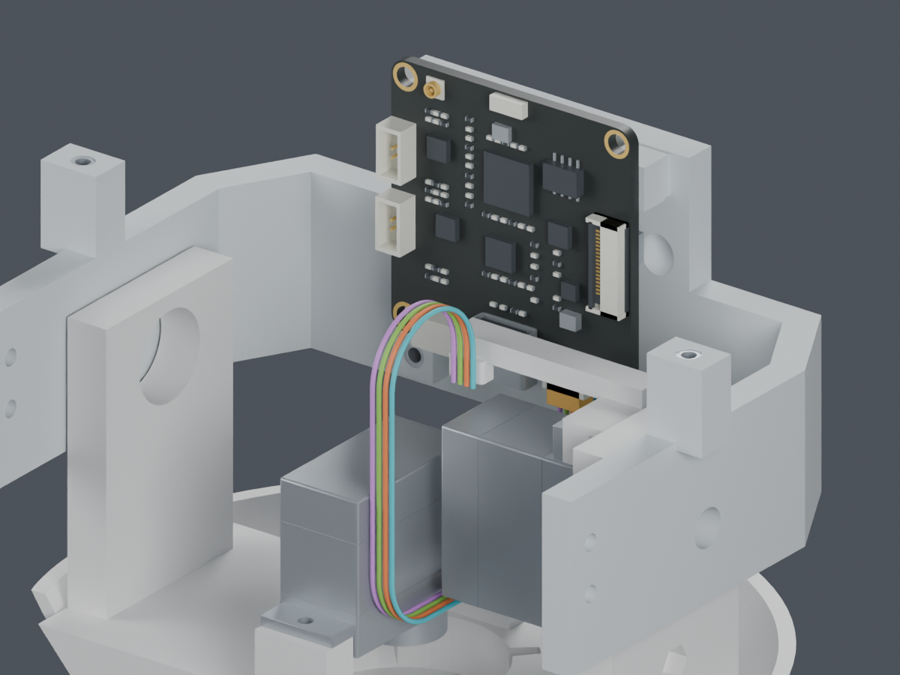

供应商按图制作已确定。标准连接器与压接参考已取得；本轮CAM后装候选的16个导线位置检查通过，但一枚固定螺钉的直柄工具仍受阻。主模型M1.47未改，最终线束图未放行。
JST SH、JST PH的胶壳、端子、线规和尺寸已找到；压接指导及完整料号查询记录也已保留。微雪CAM V1.1原理图写明SH1.0四针UART，但未提供完整插座厂牌料号及线端针腔视图。
SCS0009有规格书和参考STEP；原配舵盘图、采购版次及部分互配细节仍未取得。详见资料复查。线长、固定点和完整装配工序由MORI项目设计，不能一并归为等厂家资料。
板卡暂抬6mm，插头从下方进入，再让板卡落座。头部线环变窄以补偿插头直线段增长，每根线总长度保持不变。四枚CAM螺钉留到最后锁紧，原有嵌件不动。

| 检查 | 结果与范围 |
|---|---|
| 导线 | 16个位置通过；逐根等长，曲率半径下界7.145mm，表面间距下界0.306mm |
| 板卡/插头落座 | 6mm连续刚性路径通过；不代表连续柔性运动或实际插合认证 |
| 固定工具 | 3处通过；下方CAM_Mount_Screw_0被俯仰舵机挡住 |
先解决这枚螺钉的工具或工序，再接通裸端穿线、线形形成与两处扎带收紧。其余头部导线、USB、相机FPC和最终裁线图也仍未完成。本候选尚未采用。
另一个42mm滑动路线的上部导线检查通过，但身体侧共同PH插头和余线暂存未闭合，因此也不能作为完整工序。所有实物压接、动态寿命与打印配合保持待验证。